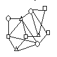

 Graph Coloring Instances
Instances below ending in .col are in DIMACS standard format. Instances in
.col.b are in compressed format
(a binary format). A translator
can go between formats. There is a description on where many of these
files came from. You can get all the instances (except the latin instance) in a tar file.
Each instance includes the information: (nodes, edges), optimal
coloring, source.
- DSJC1000.1.col.b (1000,99258), ?, DSJ
- DSJC1000.5.col.b (1000,499652), ?, DSJ
- DSJC1000.9.col.b (1000,898898), ?, DSJ
- DSJC125.1.col.b (125,1472), ?, DSJ
- DSJC125.5.col.b (125,7782), ?, DSJ
- DSJC125.9.col.b (125,13922), ?, DSJ
- DSJC250.1.col.b (250,6436), ?, DSJ
- DSJC250.5.col.b (250,31366), ?, DSJ
- DSJC250.9.col.b (250,55794), ?, DSJ
- DSJC500.1.col.b (500,24916), ?, DSJ
- DSJC500.5.col.b (500,125249), ?, DSJ
- DSJC500.9.col.b (500,224874), ?, DSJ
- DSJR500.1.col.b (500,7110), ?, DSJ
- DSJR500.1c.col.b (500,242550), ?, DSJ
- DSJR500.5.col.b (500, 117724), ?, DSJ
- flat1000_50_0.col.b (1000,245000), 50, CUL
- flat1000_60_0.col.b (1000,245830), 60, CUL
- flat1000_76_0.col.b (1000,246708), 76, CUL
- flat300_20_0.col.b (300,21375), 20, CUL
- flat300_26_0.col.b (300, 21633), 26, CUL
- flat300_28_0.col.b (300, 21695), 28, CUL
- fpsol2.i.1.col (496,11654), 65, REG
- fpsol2.i.2.col (451,8691), 30, REG
- fpsol2.i.3.col (425,8688), 30, REG
- inithx.i.1.col (864,18707), 54, REG
- inithx.i.2.col (645, 13979), 31, REG
- inithx.i.3.col (621,13969), 31, REG
- latin_square_10.col
(900,307350), ?, le450_15a.col (450,8168), 15, LEI
- le450_15b.col (450,8169), 15, LEI
- le450_15c.col (450,16680), 15, LEI
- le450_15d.col (450,16750), 15, LEI
- le450_25a.col (450,8260), 25, LEI
- le450_25b.col (450,8263), 25, LEI
- le450_25c.col (450,17343), 25, LEI
- le450_25d.col (450,17425), 25, LEI
- le450_5a.col (450,5714), 5, LEI
- le450_5b.col (450,5734), 5, LEI
- le450_5c.col (450,9803), 5, LEI
- le450_5d.col (450,9757), 5, LEI
- mulsol.i.1.col (197,3925), 49, REG
- mulsol.i.2.col (188,3885), 31, REG
- mulsol.i.3.col (184,3916), 31, REG
- mulsol.i.4.col (185,3946), 31, REG
- mulsol.i.5.col (186,3973), 31, REG
- school1.col (385,19095), ?, SCH
- school1_nsh.col (352,14612), ?, SCH
- zeroin.i.1.col (211,4100), 49, REG
- zeroin.i.2.col (211, 3541), 30, REG
- zeroin.i.3.col (206, 3540), 30, REG
- anna.col (138,493), 11, SGB
- david.col (87,406), 11, SGB
- homer.col (561,1629), 13, SGB
- huck.col (74,301), 11, SGB
- jean.col (80,254), 10, SGB
- games120.col (120,638), 9, SGB
- miles1000.col (128,3216), 42, SGB
- miles1500.col (128,5198), 73, SGB
- miles250.col (128,387), 8, SGB
- miles500.col (128,1170), 20, SGB
- miles750.col (128,2113), 31, SGB
- queen10_10.col (100,2940), ?, SGB
- queen11_11.col (121,3960), 11, SGB
- queen12_12.col (144,5192), ?, SGB
- queen13_13.col (169,6656), 13, SGB
- queen14_14.col (196,8372), ?, SGB
- queen15_15.col (225,10360), ?, SGB
- queen16_16.col (256,12640), ?, SGB
- queen5_5.col (25,160), 5, SGB
- queen6_6.col (36,290), 7, SGB
- queen7_7.col (49,476), 7, SGB
- queen8_12.col (96,1368), 12, SGB
- queen8_8.col (64, 728), 9, SGB
- queen9_9.col (81, 2112), 10, SGB
- myciel3.col (11,20), 4, MYC
- myciel4.col (23,71), 5, MYC
- myciel5.col (47,236), 6, MYC
- myciel6.col (95,755), 7, MYC
- myciel7.col (191,2360), 8, MYC
Notes:
- DSJ: (From David Johnson
(dsj@research.att.com)) Random graphs
used in his paper with Aragon, McGeoch, and Schevon, ``Optimization by
Simulated Annelaing: An Experimental Evaluation; Part II, Graph
Coloring and Number Partitioning'', Operations Research, 31, 378--406
(1991). DSJC are standard (n,p) random graphs. DSJR are geometric
graphs, with DSJR..c being complements of geometric graphs.
- CUL: (From Joe Culberson
(joe@cs.ualberta.ca)) Quasi-random coloring problem.
- REG: (From Gary Lewandowski
(gary@cs.wisc.edu)) Problem based on register allocation for variables
in real codes.
- LEI: (From Craig Morgenstern
(morgenst@riogrande.cs.tcu.edu)) Leighton graphs with guaranteed
coloring size. A reference is F.T. Leighton, Journal of Research of
the National Bureau of Standards, 84: 489--505 (1979).
- SCH: (From Gary Lewandowski
(lewandow@cs.wisc.edu))Class scheduling graphs, with and
without study halls.
- LAT: (From Gary Lewandowski (lewandow@cs.wisc.edu))
Latin square problem.
- SGB: (From Michael Trick (trick@cmu.edu)) Graphs from Donald Knuth's Stanford GraphBase. These can be divided into:
- Book Graphs. Given a work of literature, a graph is created where
each node represents a character. Two nodes are connected by an edge
if the corresponding characters encounter each other in the book.
Knuth creates the graphs for five classic works:
Tolstoy's Anna Karenina (anna), Dicken's David
Copperfield (david), Homer's Iliad (homer),
Twain's Huckleberry Finn (huck), and Hugo's Les
Mis\'erables (jean).
- Game Graphs. A graph representing the games played in a
college football season can be represented by a graph where the nodes
represent each college team. Two teams are connected by an edge if
they played each other during the season. Knuth gives the
graph for the 1990 college football season.
- Miles Graphs. These graphs are similar to geometric graphs
in that nodes are placed in space with two nodes connected if they are
close enough. These graphs, however, are not random. The nodes
represent a set of United States cities and the distance between them
is given by by road mileage from 1947. These graphs are also due to
Kuth.
- Queen Graphs. Given an n by n chessboard, a queen
graph is a graph on n^2 nodes, each corresponding to a square of the
board. Two nodes are connected by an edge if the corresponding
squares are in the same row, column, or diagonal. Unlike some of the
other graphs, the coloring problem on this graph has a natural
interpretation: Given such a chessboard, is it possible to place n
sets of n queens on the board so that no two queens of the same set
are in the same row, column, or diagonal? The answer is yes if and
only if the graph has coloring number n. Martin Gardner states
without proof that this is the case if and only if $n$ is not
divisible by either 2 or 3. In all cases, the maximum clique in the
graph is no more than n, and the coloring value is no less than n.
- MYC: (From Michael Trick (trick@cmu.edu))
Graphs based on the Mycielski transformation. These graphs are
difficult to solve because they are triangle free (clique number
2) but the coloring number increases in problem size.